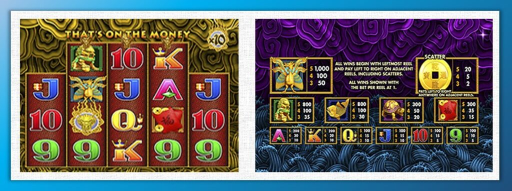
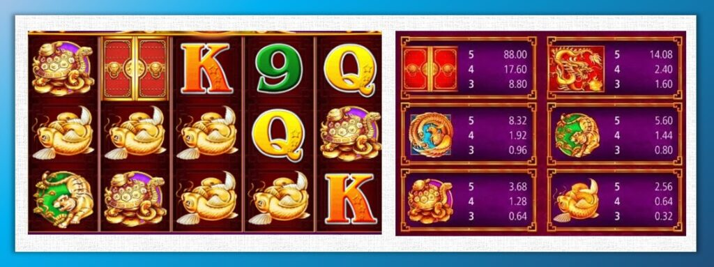
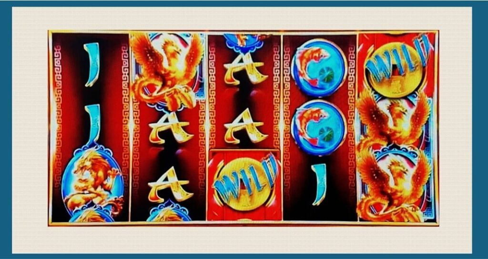

進入第二間 Slot 公司，那時正值該公司動盪。 沒有坑就不會招人，新進的每一個人都得「立刻能上戰場」。我原本是前端，優勢是能很快拼出接近成品的原型，讓整個專案有畫面。
對我來說，沒有畫面就沒有方向。
我就用這有效率又有畫面的原型模式，成為企劃的主力。
可疑的企劃
雖然原型模式在專案經理眼中，能提前理解成品對決策有效率。 或許還沒被獲得部分美術的信任，有畫面的原型，在他們眼中就成了那種—— 太懂畫面、卻又不是美術的可疑企劃。
某次討論 Symbol，美術主管抱怨說： 「你們企劃只要寫清楚這是什麼物件就好，不然會限制美術創作。」 我憂心想：「該不會又重演，前公司踩到美術底線了的劇本吧。」

意外的是，原畫師私下對我鼓勵的說： 「我覺得你這樣很好，方向明確，比較不會改來改去。」
有聊到前面也有企劃的拼湊實體能力較薄弱，企劃就必須在美術草圖到成品之間， 花費大量的時間與精力，用大量的文字、語言、比喻去溝通。但對畫圖的人來說，看到圖，比聽敘述，更能理解方向。造成企劃覺得美術畫不好，美術說企劃講不清楚的尷尬局面。那時我更堅定地確認：
能拼湊出『可想像畫面』的能力，才是 Slot 企劃真正的基本功。
Slot 企劃為什麼要插手主題與 Symbol
企劃的工作是將不具體的想法，初步盡全力實體化到團隊能承接程度。 遊戲企劃更是要把「難以言喻好玩體感」，轉成能見、可做、可討論的形狀。
或許真有那種傳奇企劃，只靠文案跟一張嘴就能帶領團隊聚焦，最後做出「好玩體感」。但實務上，不論專案經理、美術、程式員都是看到初步畫面，才能抓到節奏。
對 Slot 遊戲團隊而言，這一點更極端。因為 Slot「好玩體感」並非來自劇情或操作，而是由一顆顆 Symbol 交織出價值與規則暗示。 而這些 Symbol 又與主題密不可分，逼得企劃不得不連主題構思都一併思考。
這並不是剝奪美術的創意空間， 而是在確保遊戲功能有了抽象框架後， 美術的創意才能真正展現它的「爽點價值」。
Slot 企劃 Symbol 設計出發點
企劃在設計 Symbol 跟盤面時，核心目的是服務玩法：「讓玩法的樂趣」能被凸顯出來。如果只是知道 Slot 的規則與機率，而不是一個真正的玩家，很難理解它的魅力究竟在哪裡。
建議先找一款能讓你「不小心沉迷」的 Slot，最好是會讓你手滑儲值再、想再轉一次的遊戲。體驗過那種瞬間的魔性後，你才好理解我接下來要談的東西。
在外人眼裡，Slot 不過是短短兩秒一局： 按下 Spin、滾輪轉動、結果揭曉，一翻兩瞪眼有什麼樂趣?還不如玩扭蛋。沒錯，如果你玩不懂 Slot，Slot 的體感就像扭蛋：看準想要的獎品、投錢、轉動、等待、揭曉。

不同的是：扭蛋打開就是摸得到的商品。而 Slot 是結果逐漸揭露、讓你「感覺自己可能中獎」的爽感。這就是Slot魔性的靈魂。
而這一切都建立在 Symbol 的功能直覺上。 玩家不用先去查賠付表，也不用讀規則， 只看停輪的 0.3 秒那一剎那，能直覺地分辨：
- 哪些 Symbol 分數高？哪些分數低？
- 哪個 Symbol 是能取代其他圖標連線的百搭 WILD？
- 哪個能觸發 BONUS？
- 哪些 Symbol 可能附帶倍數、鎖定、延展或其他特色？
這些「一眼就懂」的功能感，是 Slot 體感的基礎。
所以企劃在思考 Symbol 的出發點，從來不是「協調的美感」，而是 Symbol 如何在 0.3 秒內被看懂，且被期待。
Slot Symbol 價值大小的切分
在一款典型的 3x5 Slot 遊戲裡，盤面通常會有 8 種以上的分數 Symbol。要讓玩家能在 0.3 秒內看懂盤面結構，我使用這三個步驟：
Symbol 分群 → 文化設定 → 造型設定
1. Symbol 分群
最常見的分群方式是「二分法」。假設遊戲中共有 8 種分數 Symbol， 可以先將它們區分為 一般 Symbol 與 高分 Symbol 兩個群組。常見比例有：
- 4 : 4 → 平衡配置。
- 6 : 2 → 一般較多、強調高分稀有。
- 2 : 6 → 反向設計，強調少量低分。
實際比例會依遊戲主題與獎勵節奏而異。
高分 Symbol：多以角色或主體物件呈現（人物、神獸、寶物）。 一般 Symbol：多以文字、符號、花紋等抽象元素構成。
先把分數圖標分成「圖像型」與「文字／符號型」， 是 建立秒辨識能力的第一步。
2.文化設定
文化是人類活動所形成的集體印象。在 Slot 中，這些文化印象可以幫助玩家快速理解圖標層級與價值差異。
▍一般 Symbol 的文化慣例
一般圖標建議使用最經典的 A、K、Q、J。這組字母源自撲克牌的大小順序，是全球玩家幾乎都有共識的符號語言。常見設計會搭配粗體字體，讓字母在縮小時仍具辨識性。不建議使用撲克牌花色（♠ ♥ ♦ ♣）作為一般圖標，因為花色在不同地區的文化裡，象徵與價值排序並不一致，容易造成混淆。

▍高分 Symbol 的文化層級
高分圖標通常會結合主題文化來建立價值層級。有幾種常見手法：
- 角色層級法（生旦淨末丑） 如果角色數量較多，可以依角色的重要性排序。 例如阿拉丁主題：
阿拉丁（主角）＞茉莉（女主）＞賈方（反派）＞蘇丹（長者）＞阿布（丑角）。 這種角色序列是文化中自然形成的價值秩序，玩家不需說明就能感受到誰更重要。

- 領域層級法（天、海、陸、財） 另一種方式是以領域象徵排序，例如：
- 中式主題：天空＝鳳凰、海洋＝寶船、陸地＝戰馬、財富＝元寶。
- 西式主題：天空＝直升機、海洋＝快艇、陸地＝跑車、財富＝金幣箱。 這種由上而下、由遠至近的排列方式，會自然地讓玩家感覺「越高越稀有、越貴」。
- 裝備層級法（主體與附屬物） 若主題以人物或戰士為核心，可依角色本身與裝備分層。 例如十字軍主題：
- M1：十字軍本人（最高分）
- M2～M5：重甲、盾牌、頭盔、長劍等附屬物。 唯一要注意的是，除主體外的裝備圖標需要明確的強弱對比， 企劃必須與美術清楚界定層級，避免所有配件看起來都同價值。
3. 造型設定
造型設定並不是要企劃去「畫」Symbol。事實上，企劃的圖多半不是手繪，而是從其他遊戲素材借來、AI 生成圖、或素材庫拼湊而來。
企劃就是用這些現有素材，加上簡單的手法讓強弱差異被看見。
▍輪廓與剪影
當你拿到圖時，第一步是測試它的輪廓是否清晰。可以直接把圖放進 PPT 去背（PPT 2016 之後的「去背」功能，體感比 Photoshop 還方便）。

可以將圖標整個塗成黑色，只看剪影。如果全黑之後仍能一眼認出「這是什麼」，那就代表輪廓夠強。

若所有 Symbol 的外形都差不多，即使顏色、明暗對比再強，在滾動時玩家也來不及分辨，效果會大打折扣。

▍立體感
這裡說的立體感，不是 3D 建模，而是腦補立體感。用的手法是「多層陰影疊加」。這種簡單的陰影層能在腦袋中模擬出空間感，比真實 3D 更自然。

▍底板層級
底板的大小與顏色，是分辨圖標強弱的快速輔助。例如：
- M1：底板滿版（100%）
- M2：約 95%
- M3～M4：約 90%
- M5：約 85%
- M6：可無底板
在底板輔助下，即使圖本身差異不大，仍能讓層級高下立判。

一般 Symbol 的顏色建議遵循由「暖到冷」的價值順序：
紅 ＞ 橘 ＞ 紫 ＞ 藍＝綠 ＞ 土黃
這套順序幾乎能自然對應玩家的「高分直覺」。在 AKQJ 上也常沿用這種漸層分布，讓視覺層級一眼明確。
除非有明確理由要凸顯高分 Symbol 的特殊性，否則不建議一般 Symbol 全用相同顏色。就算一般 Symbol 全部塗成最高貴的金色，也會讓玩家潛意識地把它們歸成同一類—「衰獎」。

▍破框與構圖層次
Symbol 不一定要被完整框在底板內。除了最高分 M1 底板滿版不建議超過底板，之外，M2～M4 的主體都可以稍微超出底框，加上形成兩層立體感，視覺上會比 AKQJ 類文字 Symbol 更接近玩家眼睛。
M1也能加方型窗格，作一些立體感的推升。
另外AKQJ不要找有明顯厚度的，會一定曾度打亂腦袋識別速度，對於大小獎價值也會錯判。

滾輪框的保留在強弱呈現也很好用。例如 BONUS 圖標常以圓形或菱形呈現，這種「非矩形」設計能自然區隔於一般 Symbol，甚至可略微「踩」出滾輪框，變成最跳入玩家眼簾的圖標。

▍百搭（WILD）與功能強調
許多剛接觸 Slot 的設計師會認為 WILD 應該最大最華麗，但實際上 WILD 的得分通常依靠連線其他 Symbol，在 Way Game 類型中，只要滿格即可，不需額外立體處理。
WILD 的四角若帶有「指向性」，玩家能更直覺地理解連線方向。若 WILD 有額外功能，可在造型上加入對應暗示：

- 倍數 WILD：直接把倍數大字壓上去。
- 延展 WILD：圖形帶上下延伸的形體。
- 鎖定 WILD：可選用有「停留」意象的主體，如大象、石像等。背板底圖用鎖的花紋...
這些都是讓功能一眼可讀的設計語言。
▍對比與氣氛
對比是造型中最難掌握、卻最有力量的手法。企劃至少要懂基本的幾個方向：
- 明暗對比：高分圖亮、低分圖暗。
- 冷暖對比：暖色更具「中獎」的心理暗示。
- 線條方向：直線與斜線能帶出速度與張力差。
最後，要記得 Slot 玩家九成以上是「為了贏錢」而來。Symbol 的整體氣氛應該帶有一點「財氣」。黃金光澤、暖色調、金邊、或閃光效果都能有效提升信心感。除此之外，還有兩個常見的強效手法：

- 霓虹：高對比的霓虹光在市場上出乎意料地有效， 尤其在夜間主題或現代風格中，效果甚至不輸黃金。
- 糖果：圓潤飽和的糖果色，對受眾玩家意外有極強的吸引力
Symbol 設計的經典案例
前面談了原則，接下來我們來看幾個實際範例。這些遊戲的 Symbol 設計早已在業界成為教科書級參考，也最能看出「文化排序、剪影差異、立體層次」之間的拿捏。
範例一：Aristocrat《Five Dragons》

這款機台堪稱 Slot 歷史上最經典的作品之一，在全球流行超過 20 年，雖然用色衝擊，造型奇異，但在造型念上是技術超前的教科書。
它的高分 Symbol 從 M1 到 M5 依序是：
鳳凰 → 魚 → 獅子 → 烏龜 → 紅包。
從文化排序來看
他用速度與生命的象徵線作為排序：
鳳凰飛得最快、獅子跑得快、魚游得快、烏龜最慢，而紅包不動。
這種自然的動態排序，讓玩家即使不看說明，也能直覺判斷價值層級。
再看造型部分：
AKQJ 採用無底板扁平字體， M 圖標鈄底板，M圖標自然的比AKQK「浮一層」視覺層級。整體顏色以金色為主調，搭配少量飽和色點綴，營造出強烈的財富感。
對比技法
底部背景使用了雲與海的弧形紋理，在滾輪框內則搭配直線或斜線的雷紋。這些對比線條讓整體畫面產生動態張力，使 M 圖標的正方形底板更往前浮出一層。
WILD 的刻意的強設計：
因為有帶倍數，做出可揭露的空間。並用火箭紋路做出「協助得分的橋樑」。
SCATTER 則是一枚立體旋轉的錢幣，與整體文化氛圍完美呼應。
每個 M 圖標的剪影都明顯不同，即使鳳凰造型抽象、甚至有人笑稱像蒼蠅，
但仍不會與其他 Symbol 混淆——這就是好設計的關鍵。
範例二：SG 的《5 Treasures》

造型上《Five Dragons》的青出於藍，承襲了經典結構又在文化與造型層級上更講究。
高分 Symbol 從 M1 到 M5 依序是：龍 → 鳳凰 → 老虎 → 玄龜 → 金魚。
它的層級排序從神獸青龍、朱雀、白虎、玄武、一路延伸到現實生物金魚，「玄學到自然科學」的價值排序相當直覺。
在視覺上：
M1 的底板滿版、M2 略小、M3～M4 採用圓形底板、M5 則無底板。
AKQJ 部分仍延續前作結構，但以明暗對比取代繁瑣的紋理對比，整體更乾淨、耐看，也符合當代美術審美。
個人借用最多美術技法的實務案例。
範例三：IGT《Fortune Gong》

說了兩個好範例，說一個企劃不適合學的地雷案例，IGT 的Fortune Gong。他們在這款遊戲中大量使用 3D 立體文字與倒影效果。出現企劃不畫圖很難解決的問題：
- 立體文字在畫面中比高分圖標（如獅子、魚）還更突出。在滾停時，視覺焦點被文字吸走，導致真正得分的 Symbol 顯得平淡——少了「中獎感」。
- 獅子與魚使用了相似的構圖與圓形底板，0.3秒高下難辨。
這些一般人平時覺得這些只是微不足道的小瑕疵，但當玩家花一個雞排的錢在轉盤上，
負面體感容易被放大，玩家就可能不再按下 Spin了。
範例改造：Fortune Gong Symbol 的再設計
光說不練假把戲，那我們就拿 Fortune Gong 的 Symbol 來實際改造一次。
首先，我會先把小獎 Symbol 的厚度與反光全部拿掉，讓畫面整體少一層雜訊。
接著，把 M圖標 的底板大小重新整合，建立一個清楚的層級比例。

只要掌握這些 Symbol 基本套路——
光靠造型、層次與剪影的處理，也能讓 Slot 企化示意達到穩定水準。